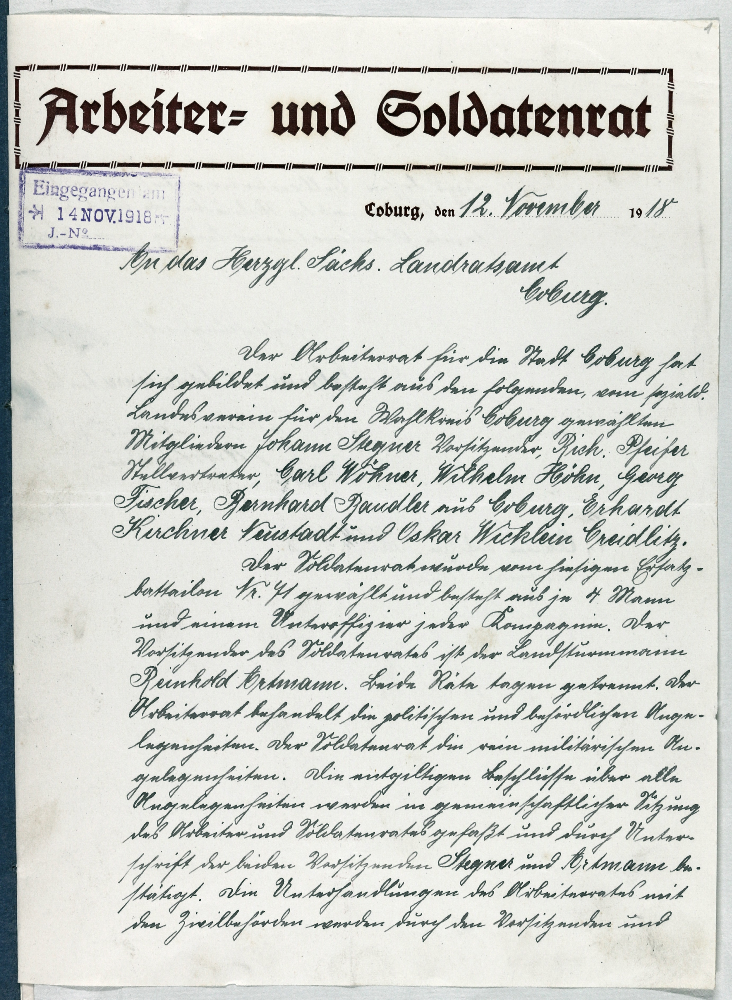

StA Coburg, LRA, 14004, fol. 1r



Kommentar
StA Coburg, LRA 14004, fol. 1r
Schreiben des Arbeiter- und Soldatenrats von Coburg1918 November 12 (Coburg)
Schreiben des Arbeiter- und Soldatenrats von Coburg1918 November 12 (Coburg)
Archivaliengattung: Akt
Schwierigkeitsgrad: leicht
Schreiberhände:
- gedruckte Formularteile (S1)
- Eingangsstempel des Landratsamts (S2)
- Schreiber des Arbeiter- und Soldatenrats (S3)
- Johann Stegner (S4)
- Reinhold Artmann (S5)
- Schreiber des Landratsamts (S6)
Der Arbeiter- und Soldatenrat für die Stadt Coburg teilt dem herzoglich sächsischen Landratsamt Coburg seine Neugründung und die Wahl der Mitglieder und Vorsitzenden mit.
Unter dem gedruckten Kopf in Fraktur folgt eine gleichmäßige Kurrentschrift, durchsetzt mit lateinischer Schreibschrift für Datum, Adresse und Namen Der Eingangsstempel des Landratamts links oben zeigt Antiqua-Minuskel und -Majuskel.
Das Schreiben ist so in den Akt eingebunden, dass auf der Rückseite einzelne Zeichen am Zeilenende überdeckt werden.
Unter dem gedruckten Kopf in Fraktur folgt eine gleichmäßige Kurrentschrift, durchsetzt mit lateinischer Schreibschrift für Datum, Adresse und Namen Der Eingangsstempel des Landratamts links oben zeigt Antiqua-Minuskel und -Majuskel.
Das Schreiben ist so in den Akt eingebunden, dass auf der Rückseite einzelne Zeichen am Zeilenende überdeckt werden.
Entzifferung
(Absatz Beginn)
1 (gedruckte Formularteile:) Arbeiter= und Soldatenrat
2 (Eingangsstempel des Landratsamts:) Eingegangen am
3 14 NOV(EMBER) 1918
4 J(ournal)-N(umer)o _
5 (gedruckte Formularteile:) Coburg, den (Schreiber des Arbeiter- und Soldatenrats:) 12. November(Wechsel des Schriftsystems)(gedruckte Formularteile:) 19(Schreiber des Arbeiter- und Soldatenrats:) 18
6 An das Herz(o)gl(ich) Sächs(ische) Landratsamt
7 Coburg(Wechsel des Schriftsystems).
8 Der Arbeiterrat für die Stadt Coburg(Wechsel des Schriftsystems) hat
9 sich gebildet und besteht aus den folgenden, vom soziald(emokratischen)
10 Landesverein für den Wahlkreis Coburg(Wechsel des Schriftsystems) gewählten
11 Mitgliedern Johann Stegner(Wechsel des Schriftsystems) Vorsitzender, Rich(ard) Pfeifer(Wechsel des Schriftsystems)
12 Stellvertreter, Carl Wöhner, Wilhelm Höhn, Georg
13 Fischer, Bernhard Bandler(Wechsel des Schriftsystems) aus Coburg, Erhardt
14 Kirchner Neustadt(Wechsel des Schriftsystems) und Oskar Wicklein Creidlitz(Wechsel des Schriftsystems).
15 Der Soldatenrat wurde vom hiesigen Ersatz-
16 battailon N(umme)r(Wechsel des Schriftsystems) 71 gewählt und besteht aus je 4 Mann
17 und einem Unteroffizier jeder Kompagnie. Der
18 Vorsitzender des Soldatenrates ist der Landsturmmann
19 Reinhold Artmann(Wechsel des Schriftsystems). Beide Räte tagen getrennt. Der
20 Arbeiterrat behandelt die politischen und behördlichen Ange-
21 legenheiten. Der Soldatenrat die rein militärischen An-
22 gelegenheiten. Die entgiltigen Beschlüsse über alle
23 Angelegenheiten werden in gemeinschaftlicher Sitzung
24 des Arbeiter und Soldatenrates gefaßt und durch Unter-
25 schrift der beiden Vorsitzenden Stegner(Wechsel des Schriftsystems) und Artmann(Wechsel des Schriftsystems) be-
26 stätigt. Die Unterhandlungen des Arbeiterrates mit
27 den Zivilbehörden werden durch den Vorsitzenden und
(Absatz Ende)
Transkription
(Absatz Beginn)
1 (gedruckte Formularteile:) Arbeiter- und Soldatenrat
2 (Eingangsstempel des Landratsamts:) Eingegangen am
3 14. November 1918
4 Journal-Numero –
5 (gedruckte Formularteile:) Coburg, den (Schreiber des Arbeiter- und Soldatenrats:) 12. November(Wechsel des Schriftsystems)(gedruckte Formularteile:) 19(Schreiber des Arbeiter- und Soldatenrats:) 18
6 An das herzoglich Sächsische Landratsamt
7 Coburg(Wechsel des Schriftsystems).
8 Der Arbeiterrat für die Stadt Coburg(Wechsel des Schriftsystems) hat
9 sich gebildet und besteht aus den folgenden, vom sozialdemokratischen
10 Landesverein für den Wahlkreis Coburg(Wechsel des Schriftsystems) gewählten
11 Mitgliedern: Johann Stegner(Wechsel des Schriftsystems), Vorsitzender, Richard Pfeifer(Wechsel des Schriftsystems),
12 Stellvertreter, Carl Wöhner, Wilhelm Höhn, Georg
13 Fischer, Bernhard Bandler(Wechsel des Schriftsystems) aus Coburg, Erhardt
14 Kirchner, Neustadt(Wechsel des Schriftsystems), und Oskar Wicklein, Creidlitz(Wechsel des Schriftsystems).
15 Der Soldatenrat wurde vom hiesigen Ersatz-
16 battailon Nummer(Wechsel des Schriftsystems) 71 gewählt und besteht aus je 4 Mann
17 und einem Unteroffizier jeder Kompagnie. Der
18 Vorsitzender des Soldatenrates ist der Landsturmmann
19 Reinhold Artmann(Wechsel des Schriftsystems). Beide Räte tagen getrennt. Der
20 Arbeiterrat behandelt die politischen und behördlichen Ange-
21 legenheiten, der Soldatenrat die rein militärischen An-
22 gelegenheiten. Die entgiltigen Beschlüsse über alle
23 Angelegenheiten werden in gemeinschaftlicher Sitzung
24 des Arbeiter- und Soldatenrates gefaßt und durch Unter-
25 schrift der beiden Vorsitzenden Stegner(Wechsel des Schriftsystems) und Artmann(Wechsel des Schriftsystems) be-
26 stätigt. Die Unterhandlungen des Arbeiterrates mit
27 den Zivilbehörden werden durch den Vorsitzenden und
(Absatz Ende)